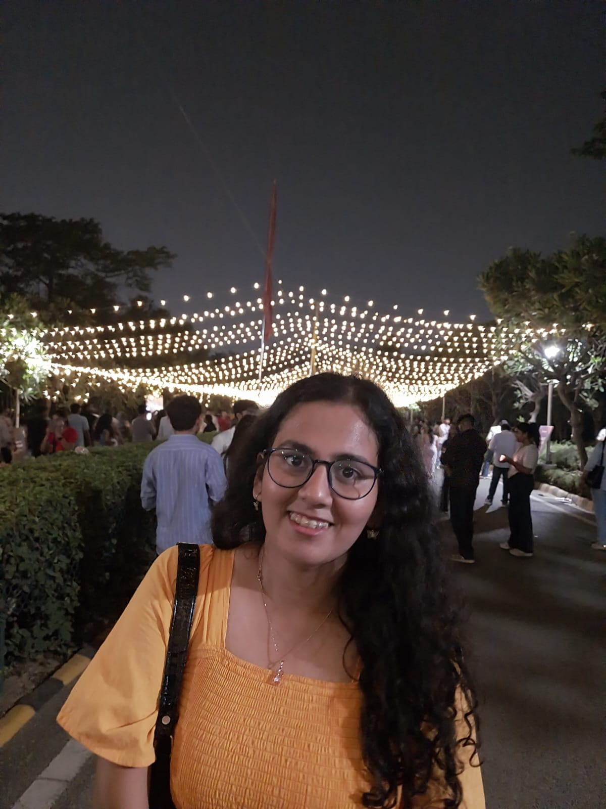

ECE Undergraduate @ NSUT | Research Intern @ IIIT Delhi | VLSI & Hardware for AI
Explore My WorkI'm a final year Electronics and Communication Engineering student at NSUT, Delhi (graduating 2027), focused on VLSI, semiconductors and hardware for AI. I design digital systems in Verilog, simulate analog and mixed-signal circuits, and study how LLM inference maps onto accelerators. This summer I worked on PIM-based inference accelerators and expert scheduling for MoE models at IIIT Delhi, and I co-authored a poster paper accepted at VLSID 2027.
Verilog · Icarus Verilog · GTKWave
Designed an RV32I processor with a five-stage pipeline (IF, ID, EX, MEM, WB). Handled data hazards with forwarding, inserted stalls for load-use hazards and flushed wrong-path instructions after taken branches. Verified with directed tests, waveforms and a self-checking SystemVerilog testbench (18/18 checks pass).
LTspice · 180nm CMOS
Designed a four-transistor MOSFET-based memristor emulator and verified its I-V hysteresis. Used it as the leak element in a leaky integrate-and-fire neuron and compared spike-frequency adaptation against a fixed-resistor design. Simulating a memristive STDP synapse for a neuromorphic hearing-aid application.
Verilog HDL · OpenLane · KLayout
Designed a dual-clock FIFO using Gray-coded pointers and two-flop synchronizers to avoid metastability across clock domains, and tested full and empty conditions. Ran the RTL-to-GDSII flow in OpenLane (synthesis, placement, CTS, routing) and inspected the layout in KLayout.
Verilog HDL · EDA Playground
Designed a finite state machine that accepts ₹0, ₹5 and ₹10 coins, dispenses products and returns change. Tested state transitions, dispensing and change return with directed and random testbench inputs.
C++ · Python · IIIT Delhi · VLSID 2027 poster
Ran the experimental evaluation of four scheduling policies on DeepSeek-V3/V2 and GLaM-143B, and produced the correlation analysis that motivates the predictor design. Grew out of ProPIM, a Logic-PIM offload redesign for Duplex's GPU–Logic-PIM MoE inference (~9–10% latency reduction on Mixtral 8×7B).
Ramulator · PIM · LLM inference
Reproduced AttAcc (ASPLOS 2024), a PIM-based transformer inference accelerator, and extended the modified Ramulator simulator with LLaMA 3.1-8B support, an H100 GPU configuration and a queuing model.
HTML · CSS · JavaScript · MongoDB
Full-stack web app for managing lost and found items on campus, with form validation and database storage for item tracking.
View ProjectESP32 · RTC
Laser-based tripwire that detects unauthorized intrusions and logs timestamps for event monitoring.

Email: anushkajharimunya@gmail.com
Phone: +91 7428566692